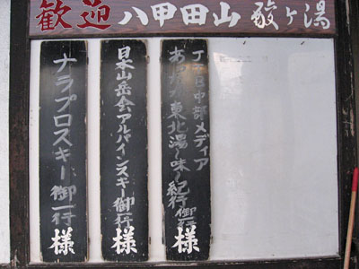
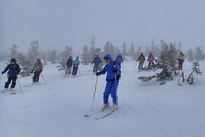

|
|||||||||||||||||||||||||||
|
|||||||||||||||||||||||||||
|
２０１３年 春の全国集会 八甲田・南八甲田の山群 |
| 開 催 日 | ２０１３年４月１９日〜4月２１日 | |||
| リーダー | 総リーダー竹越、サブリーダー田代 | |||
| 写真撮影 | 参加者の皆さん | |||
| ＨＰまとめ | 小松崎、西田 | |||
| 参加者数 | ４３名 （会員４１名、ゲスト２名） | |||
| 日本山岳会アルパインスキークラブの２０１３年春の全国集会は、八甲田・南八甲田の山群で、４３名が参加して、４月１９日〜４月２１日の２泊３日で行われた。宿舎は酸ヶ湯温泉。なお、１８名は希望により４月１８日に前泊した。 １９日と２１日は、残念ながら降雪に見舞われたが、中日２０日は好天気に恵まれ、八甲田ロープウェー山頂公園駅から箒場岱までの山スキーを楽しんだ。２０日夜の懇親会は全国から駆けつけた会員で盛り上がった。今回の全国集会は日本山岳会青森支部の献身的ご協力で実現したもので、幹事団事務局として感謝したい。 |
| １日目 ４月１９日(金) |
仙人岱往復ルート、 前夜祭 |
| 今日は、前泊や夜行で到着した〇〇人が、生憎の小雪の中で、仙人岱ヒュッテまでの往復の山スキーを楽しんだ。 |
| 酸ヶ湯温泉〜仙人岱往復ルート |
| ツアーの報告をお書き下さい。 |
| A | ||
| 降雪の中で出発前のブリーフィング | 竹越リーダーから本日のコースについて説明 |
| この前後にツアー中の写真を入れて下さい。 ファイル名が重複しないよう、例えば”1-2-x”として下さい。 |
A | |
| A | ||
| 4月19日のＧＰＳ軌跡 |
| 全国集会受付と前夜祭 |
|  | A | |
| 酸ヶ湯温泉に掲げられた歓迎の表札 | 幹事の受付風景 |
| 明日の本番を待ちきれない３８名で前夜祭を楽しむ |
| ２日目 ４月２０日(金) |
八甲田山箒場岱ルート、 懇親会 |
| 今日は朝から絶好の晴天に恵まれた。当初の予定ではこの日は南八甲田山域のツアーの予定であったが、アクセス道路の除雪が遅れていたため、急遽北八甲田山域の箒場岱ルートに変更された。参加者３９名。 |
| 八甲田山ロープウェー山頂公園駅から箒場岱ルート |
| ツアーの報告をお書き下さい。 |
| 幹事が用意した６つの班別リボン |
| A | ||
| 今日は朝から晴天だ | ブリーフィングもそこそこに酸ヶ湯の専用バスで出発 |
| A | ||
| 八甲田山ロープウェー山頂公園駅で降りて、班別にスタート | 田茂范岳をバックにひたすら登る |
| A | ||
| 高田大岳 | ８０歳以上の大先輩もお元気だ |
| 雛岳が見える |
| 箒場岱のレストハウスに着き、迎えの酸ヶ湯温泉の専用バスで宿舎に戻る |
| この前後にツアー中の写真を入れて下さい。 ファイル名が重複しないよう、例えば”2-2-x”として下さい。 |
A | |
| A | ||
| 4月20日のＧＰＳ軌跡 上の地図をクリックすると、大きな地図が開きます。スクロールしてご覧下さい。 終れば、Internet Explorerの[戻る] |
| 懇親会 |
| ２２日の夜は４１名参加の懇親会。お世話下さった皆さんの挨拶、小松原幹事長の発声で乾杯、首都圏と地方の全幹事の紹介、最後に参加者全員の自己紹介があった。その後、２次会、３次会もあり、１年振りに会えた人ともスキー談義の花が咲いた。 |
 |
A | A | A | A | ||||
| 小松原幹事長 | 中村青森支部長 | 地元でお世話下さった、左から中村さん、竹越さん、田代さん | ||||||
| 全国集会に参加した今年度の全国の幹事が勢揃い | ||
| 幹事さんのご尽力に惜しみない拍手が送られた |
| 宴半ばで、酔っぱらわないうちに記念写真 |
| A | ||
| その後、部屋を変えて２次会、３次会が続いた | ||
| ３日目 4月２１日(日) |
南八甲田猿倉岳鞍部往復ルート、閉会式 |
| 今日は、全国集会最終日。待望の南八甲田スキーツアーである。時間の制約があるので、猿倉岳の鞍部を往復することになった。参加者〇〇名。ツアー後、宿舎に戻り、温泉を浴びて解散式を行った。 |
| 〇〇で酸ヶ湯の専用バスを降りて登り始める |
| A | ||
| 猿倉岳鞍部。ここでシールを外し、滑降を開始する。 | ||
| A |  | |
| 笠松峠までスキーで滑降し、迎えの酸ヶ湯の専用バスに乗る |
| この前後にツアー中の写真を入れて下さい。 ファイル名が重複しないよう、例えば”3-2-x”として下さい。 |
A | |
| A | ||
| 酸ヶ湯温泉で解散式を行い、２０１３年のアルパインスキークラブ春の全国集会は終了した |
| クリックして、解散式の動画をご覧下さい |
| 4月21日のＧＰＳ軌跡 |
| 日本山岳会アルパインスキークラブの２０１３年春の全国集会は、４３名が参加し、事故もなく無事終了した。会期の前後は風雪に祟られたが、中日の八甲田山箒場岱ルートの山スキーツアーは素晴らしい晴天に恵まれ、予定のルートを完走できた。 企画・運営された青森支部の皆さん、幹事の皆さん、宿舎を提供して頂いた酸ヶ湯温泉の皆さんにお礼申し上げます。来年もどこかの全国集会で会いましょう。 |